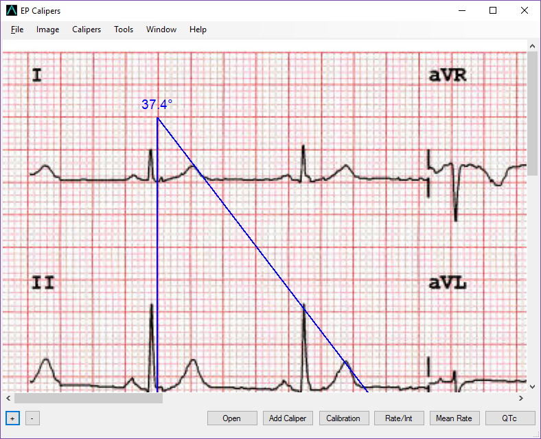

Calipers
Calipers
Adding and deleting calipers
Calipers come in three flavors. Calipers with a horizontal crossbar and vertical sidebars are used to make time measurements and are called time calipers. Calipers with a vertical crossbar and horizontal sidebars are used to make amplitude measurements and are called, you guessed it, amplitude calipers. Finally angle calipers are used to measure angles, such as the ùû´ angle in Brugada syndrome.
Add Calipers
Add calipers by clicking on the Add Caliper button and then selecting a time, amplitude caliper, or angle caliper in the dialog that appears, or use the Caliper menu (or shortcut keys) to do this.

Figure 1: Add caliper dialog
Selecting Calipers
In order to make measurements or calibrate, it is necessary to select a single caliper when there are multiple calipers on the screen. A single mouse click on any part of a caliper selects it. A selected calipers is evident because it is a different color (by default red, but you can change this) than unselected calipers (by default blue). Single-clicking a selected caliper again will unselect it. Only one caliper at a time can be selected.

Figure 2: The red caliper is selected

Figure 3: An angle caliper
Deleting Calipers
Double-click a caliper to delete it. Note that after calibration, even if you delete all calibrated calipers, new calipers that are added will retain calibration. You can also delete the selected caliper or all calipers using the menu or using the shortcut keys Del (Delete) and SHIFT-Del.
Caliper Colors
If you right-click on a caliper with your mouse, a context menu will appear. The first item on this menu is Caliper Color. Click this option, and the color selector appears. Use the color selector to change the color of the caliper you clicked on. The color change will only affect the individual caliper you clicked on. You can change the default caliper color of new calipers by changing Options.
Marching calipers
Right-clicking a time caliper with your mouse will open the secondary menu with the option Marching Caliper available. Click this and the time caliper will be converted to a marching caliper. Vertical caliper lines will appear equal to the caliper width on either side of the caliper. This is very useful to assess the regularity or irregularity of a rhythm, or to detect P waves marching through a tachycardia or during heart block. Select Marching Caliper again to change the marching caliper back to normal again. Note that amplitude and angle calipers cannot be converted to marching calipers.
Figure 4: Marching caliper
Moving calipers
Moving
Push the left mouse button while hovering over the crossbar area of a caliper. Drag the mouse with the left button held down to move the caliper as a unit. To move angle calipers, select the top (apex) of the angle where the two lines join together.
Stretching (opening and closing)
If the cursor is positioned over either the left or right sidebar of a time caliper (or top or bottom bars of an amplitude caliper) clicking with the left mouse button and then dragging will move that caliper bar by itself. In this way you can widen or narrow the caliper interval. Note that you cannot move both bars at the same time. When you move one caliper bar, the other one always stays fixed. With angle calipers, select either of the two bars of the angle a little distance away from the apex and drag to open and close the angle.
By combining movements, you can place a caliper anywhere on the ECG image to make measurements.
Tweaking
"Tweaking" or "micromoving" is a way to more finely control caliper movement. When you tweak a caliper position, you use the keyboard arrow keys to move a caliper component or the entire caliper a fraction of a point in any direction. If you right-click on a caliper with a mouse you bring up a context menu that includes the option Tweak Caliper Position. Click on this option. A message will appear showing which component of the caliper you clicked on (left bar, right bar, top bar, bottom bar, crossbar, or apex, depending of the type of caliper). Right click on a different component to change which component you want to move. Then use the keyboard arrow keys to move the selected caliper component. Hold down dontrol with arrow keys to more finely move the caliper component. Note that if you select the crossbar, or apex of an angle caliper, the arrow keys cause the caliper to move as a unit. Selecting any other component just moves that component. Select the Cancel button to turn off tweaking.